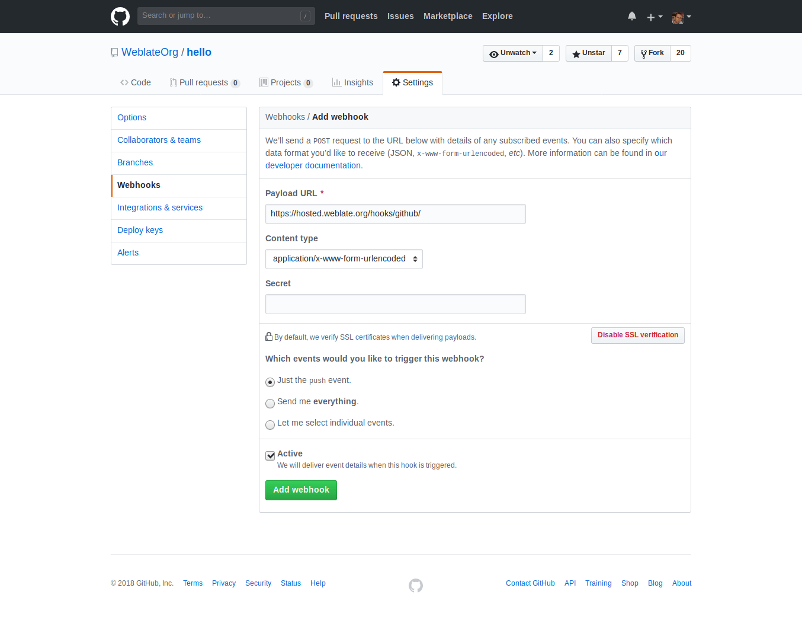

継続的トランスレーション¶
Weblate はあなたの開発に密に追従する翻訳のための最高の基盤を提供します。これにより翻訳者は常に翻訳に取り組むことができ、リリース前に新たに大量のテキストの翻訳を強いられることがありません。
完全なプロセスは次のようなステップで説明することができます。
- 開発者は変更を行い VCS リポジトリに push します。
- ファイル形式によっては翻訳ファイルが更新されます（これはファイル形式に依存します。Why does Weblate still show old translation strings when I've updated the template? を参照してください）。
- Weblate は変更を VCS リポジトリから取得します。リポジトリを更新する を参照してください。
- Weblate が翻訳に変更を検知すると、翻訳者に購読設定に応じて通知が行われます。
- 翻訳者は Weblate のウェブインターフェイスを使用して翻訳を行います。
- 翻訳が行われると、Weblate は変更をローカルリポジトリにコミットします（省力コミット を参照してください）。同時に、許可が与えられている場合は、リモートリポジトリに変更を送信します（変更をプッシュする を参照してください）。
リポジトリを更新する¶
バックエンドリポジトリをソースに基づいて更新するために、何らかの方法を設定しておく必要があります。フックを使うこともできますし（Notification hooks を参照してください）、単に定期的に updategit を（プロジェクトを選択して、あるいは --all ですべてのプロジェクトに対し）実行することもできます。
リポジトリが更新されるとその都度、Post-update script フックが実行されます。
Gettext po ファイルにおいては、しばしば PO ヘッダの競合に遭遇することになります。これを避けるために、付属のマージドライバ（examples/git-merge-gettext-po）を使うことができます。.gitconfig ファイルに以下の設定を行うだけで、これを使うことができます。
[merge "merge-gettext-po"]
name = merge driver for gettext po files
driver = /path/to/weblate/examples/git-merge-gettext-po %O %A %B
そして所定のリポジトリで適当な属性を定義することにより、使用を有効にしてください（例えば .git/info/attributes ファイルなど）。
*.po merge=merge-gettext-po
注釈
このマージドライバは、POT ファイルの変更は常に、マージしようとしているブランチで行われていると仮定しています。
バージョン 2.9 で変更: このマージドライバは現在は Weblate のすべての内部リポジトリで自動的にインストールされます。
マージ時の競合を避ける¶
マージ時の競合を避けるためには、リモートリポジトリでの翻訳ファイルの更新タイミングをコントロールし、Weblate が同じファイルを変更するのを避けなければいけません。
Weblate's Web API を使って、Weblate で保留中の変更をすべてリモートリポジトリに反映させることと、ローカルで変更を行っている間は Weblate での翻訳にロックをかけておくことによって、これを行うことができます。
更新を行うスクリプトは次のようになります。
# Lock Weblate translation
wlc lock
# Push changes from Weblate to upstream repository
wlc push
# Pull changes from upstream repository to your local copy
git pull
# Update translation files, this example is for Django
./manage.py makemessages --keep-pot -a
git commit -m 'Locale updates' -- locale
# Push changes to upstream repository
git push
# Tell Weblate to pull changes (not needed if Weblate follows your repo
# automatically)
wlc pull
# Unlock translations
wlc unlock
同一のリポジトリを共有する複数のコンポーネントがある場合は、個々のコンポーネントごとに、それぞれロックをかける必要があります。
wlc lock foo/bar
wlc lock foo/baz
wlc lock foo/baj
注釈
これらのスクリプト例では Weblate Client を使っていますが、これには Weblate をリモートコントロールするための設定（API キー）が必要です。 wlc ではなく、例えば curl などの HTTP クライアントを使っても同じことを実現できます。Weblate's Web API を参照してください。
GitHub から自動的に変更を受け取る¶
Weblate は最初から GitHub をサポートするように作られています。
Weblate ホスティングサービスを利用されている場合は、Hosted Weblate app をインストールするのがおすすめです。これによって最小限の設定で正しいセットアップをすることが可能です。将来は同じように Weblate から GitHub への変更の送信にも対応する予定ですが（これが書き込み権限も要求される理由です）、現在のところはまだ実装されていません。
GitHub リポジトリへのすべてのプッシュの通知を受け取るためには、次の画像で示すように、リポジトリ設定の Webhooks で Weblate Webhook を追加するだけでよいです。
payload URL として、/hooks/github/ をあなたの Weblate URL に追加してください。例えば Weblate ホスティングサービスであればこれは https://hosted.weblate.org/hooks/github/ になります。
それ以外の設定値は最初のままで構いません（Weblate は単に push イベントで content types と consumes の両方を取り扱うことができます）。
Automatically receiving changes from Bitbucket¶
Weblate has support for Bitbucket webhooks, all you need to do is add a webhook
which triggers on repository push with destination to /hooks/bitbucket/ URL
on your Weblate installation (for example
https://hosted.weblate.org/hooks/bitbucket/).
Automatically receiving changes from GitLab¶
Weblate has support for GitLab hooks, all you need to do is add project web hook
with destination to /hooks/gitlab/ URL on your Weblate installation
(for example https://hosted.weblate.org/hooks/gitlab/).
Automatically receiving changes from Pagure¶
バージョン 3.3 で追加.
Weblate has support for Pagure hooks, all you need to do is add project web hook
with destination to /hooks/pagure/ URL on your Weblate installation (for
example https://hosted.weblate.org/hooks/pagure/). This can be done in
Activate Web-hooks under Project options:
変更をプッシュする¶
プロジェクトごとにプッシュ URL を設定することができます。設定すると Weblate のウェブインターフェイスにプッシュボタンが現れ、リモートリポジトリに変更をプッシュすることができるようになります。またすべてのコミットごとに自動的に変更のプッシュが行われるように Weblate を設定することもできます。
SSH をプッシュに使用している場合は、パスフレーズを設定していないキー（もしくは Django 用の ssh-agent）が必要になります。そしてまず管理インターフェイスでリモートサーバを認証する必要があります。これをしないとプッシュしても失敗します。
プッシュのオプションは使用している Version control integration によって違いますので、詳しくはそちらの章を参照してください。
注釈
コミットした時に自動的に変更がプッシュされるようにすることもできます。これは コンポーネント設定 で可能です。
参考
SSH キーのセットアップについては Accessing repositories を参照してください。Weblate がいつ変更をコミットするかについては 省力コミット を参照してください。
Pushing changes from Hosted Weblate¶
For Hosted Weblate there is a dedicated push user registered on GitHub, Bitbucket and GitLab (with username weblate and named Weblate push user). You need to add this user as a collaborator and give him permissions to push to your repository. Let us know when you've done so and we will enable pushing changes from Hosted Weblate for you.
マージあるいはリベース¶
初期設定では、Weblate はリモートリポジトリを Weblate リポジトリにマージします。Weblate リポジトリにアクセスする他の方法もある場合には、これがいちばん安全な方法です。これが必要ない場合は、変更をリモートリポジトリにリベースすることもできます。これにより履歴でマージコミットを減らすことができます。
注釈
複雑なマージにおいては、リベースはトラブルを引き起こすこともあります。このため、リベースを有効にするかどうかは、慎重に考慮してください。
省力コミット¶
Welate は同一の翻訳者によるコミットは、可能なかぎりひとつのコミットにまとめてコミットします。これにより大幅にコミット数は減りますが、例えばマージをする際など、VCS リポジトリと同期させたい場合には、コミットをするよう明示的に Weblate に命じなければなりません（これは管理者グループユーザには最初から許可されています。Access control を参照してください）。
このモードにおける複数の変更は、以下の条件のいずれかが満たされた時に、まとめて一度にコミットされます。
- 他の誰かが、すでに変更されている文字列に変更を加えたとき
- リモートリポジトリからマージ動作が行われたとき
- 翻訳ファイルのインポートが行われたとき
- 大量の状態の変更が行われたとき
- 検索置換が行われたとき
- 明示的にコミットが要求されたとき
以上に加えて、保留された変更を少し遅れてコミットさせるための、クロンジョブを設定することもできます。commit_pending と Running maintenance tasks を参照してください。
リポジトリをスクリプトで処理する¶
Weblate のリポジトリとのやりとりをカスタマイズするための方法が、Addons です。addon を通して外部スクリプトを実行する方法については、Executing scripts from addon を参照ください。